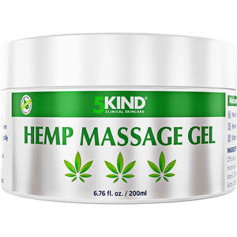

Trade Mark Journal No.2025/030 25 July 2025
UK00004198256 2 May 2025 (3,5)

- Class 3
- Age retardant gel; Age retardant lotion; Age spot reducing creams; Aloe vera gel for cosmetic purposes; Aloe vera preparations for cosmetic purposes; Anti-aging creams; Anti-bacterial face washes (non-medicated-); Anti-wrinkle cream; Astringents for cosmetic purposes; Barrier creams; Barrier creams for the skin; Cleaning preparations for personal use; Cleansing foam; Cleansing gels; Cleansing lotions; Cleansing masks; Collagen preparations for cosmetic application; Collagen preparations for cosmetic purposes; Creams for cellulite reduction; Dermatological creams [other than medicated]; Facial cleansers; Facial cleansers [cosmetic]; Facial washes [cosmetic]; Foot balms (non-medicated-); Hand barrier creams; Lip balm; Massage creams, not medicated; Massage gels other than for medical purposes; Non medicated skin toners; Non-medicated cleansing creams; Non-medicated foot cream; Skin cleansers [cosmetic]; Skin cleansing lotion; Toning lotion, for the face, body and hands; Wrinkle resistant cream; wrinkle reducing masks; wrinkle reducing serums; non-fragranced emollients; wrinkle reducing face packs; wrinkle reducing facial masks; non-fragranced skin emollients.
- Class 5
- Pain relieving gels and creams; herbal supplements; vitamin supplements; antibacterial soap; aloe vera gel for therapeutic purposes.
Premier Croo Ltd